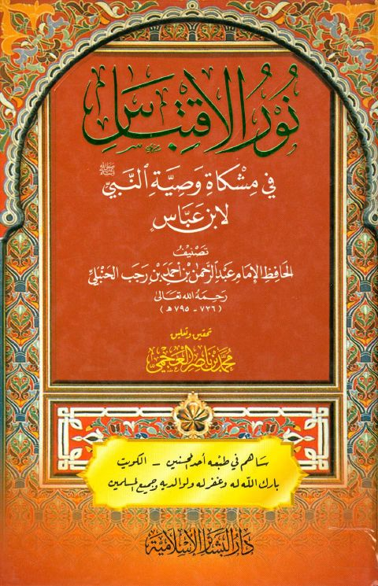

Downloads need an internet connection.
نور الاقتباس في مشكاة وصية النبي ﷺ لابن عباس
Authors: ابن رجب الحنبلي
Editors: محمد بن ناصر العجمي
Publishers: دار البشائر الإسلامية
**▫️ العنوان: نور الاقتباس في مشكاة وصية النبي ﷺ لابن عباس** ▪️ المؤلف: #عبد_الرحمن_بن_أحمد_بن_رجب_السلامي_أبو_الفرج ▫️ المحقق: #محمد_بن_ناصر_العجمي ▪️ الناشر: #دار_البشائر_الإسلامية ▫️ تاريخ النشر: 1424هـ 2003م ▪️ بلد النشر: بيروت، #لبنان ▫️ الطبعة: 4 ▪️ عدد الأجزاء: 1 ▫️ الصفحات: 161 ▪️ نوع الوعاء: #كتاب ▫️ التصنيف الرئيسي: #الزهد_والرقائق ۪